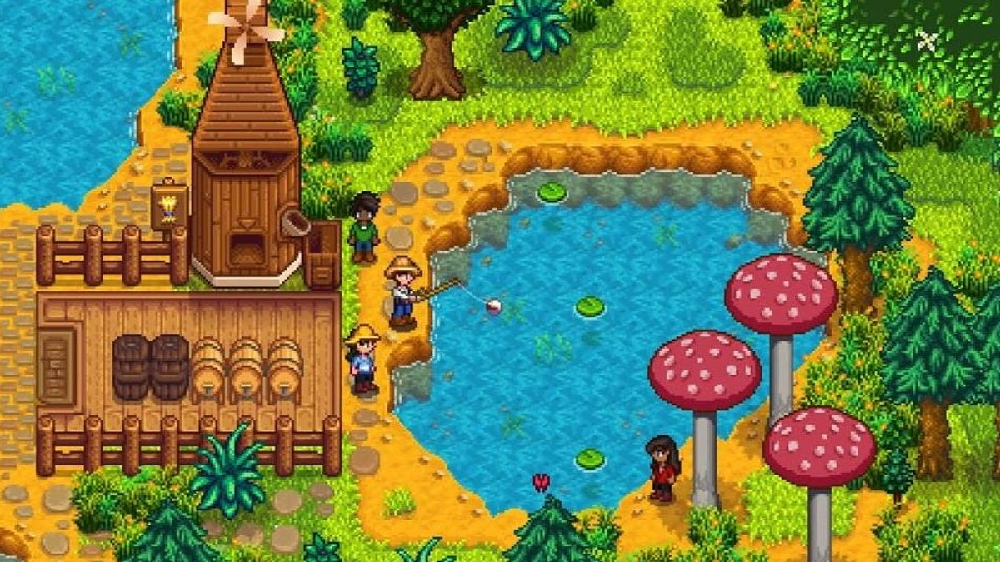
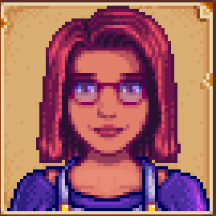

Stardew Valley Loved Gifts Guide
A guide to the best gifts to give villagers in Stardew Valley
Here is a link to my second page, about
the dislikes of the characters mentioned below.
Here is a link to my third page, about the
various crops and plants in Stardew Valley.

All characters in Stardew Valley have different likes and dislikes.
The following is a list of a select few characters in the game and items they
like, to help in your progress in the game.
- Maru

- Strawberry
- Battery Pack
- Cauliflower
- Gold Bar
- Pepper Poppers
- Rhubarb Pie
- Sebastian

- Frozen Tear
- Obsidian
- Pumpkin Soup
- Sashimi
- Void Egg
- Penny

- Diamond
- Emerald
- Poppy
- Melon
- Sandfish
- Roots Platter
- Abigail

- Amethyst
- Banana Pudding
- Pufferfish
- Pumpkin
- Blackberry Cobbler